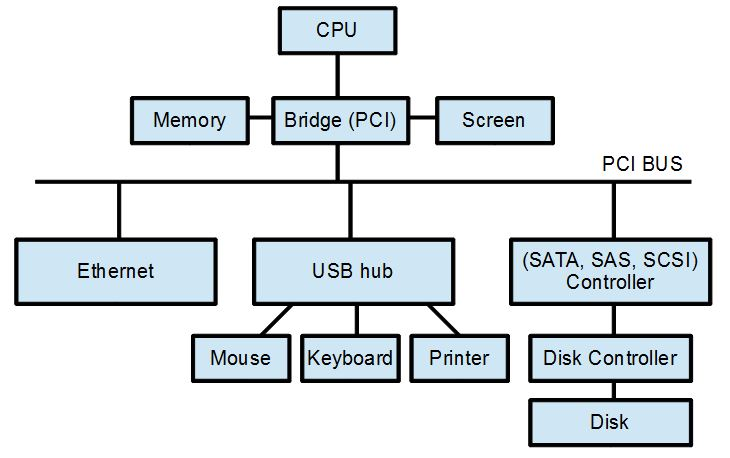
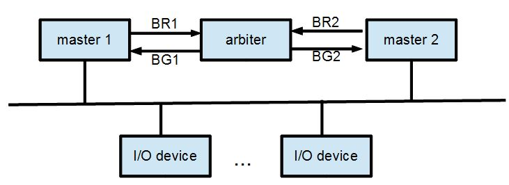

輸出入單元 (I/O)
前言

圖、PC 匯流排的連接結構
BUS (總線, 匯流排)
由於線路多的話會很混亂，而且成本很高。舉例而言，假如有 n 個節點 (裝置)，所有節點之間都要互相直接相連，那麼就需要 n*(n-1)2/ 這個多組線路，這將會是個密密麻麻的災難。
如果、我們讓所有的節點都連接到一組共用的線路，這套線路就稱為 BUS。只要大家都遵循一套固定的傳送規則，我們就可以用 BUS 作為所有人的通訊橋梁。
以下是用 Verilog 宣告 BUS 線路的三種方法，分別是 wire, wand 與 wor。
wire [n-1:0] BUS;
wand [n-1:0] andBUS;
wor [n-1:0] orBUS;下列是採用 wire 方式宣告 BUS 的一個範例，當某個 seli 選擇線為 1 時，就會將對應的來源資料 sourcei 放到 BUS 上。而那些沒被選到的來源，由於是放高阻抗 Z ，所以會處於斷線的狀態。
wire [n-1:0] BUS;
parameter [n-1:0] disable = n'bZ;
assign BUS = sel1?source1:disable;
assign BUS = sel2?source2:disable;
...
assign BUS = selk?sourcek:disable;另外兩種宣告 BUS 的方法，也就是 wand 與 wor，與 wire 其實很像，差別只在於 wand 的 disable 是用 n'b1, 而 wor 的 disable 是用 n'b0。
同步匯流排 (Synchronous BUS)
module master(input clock, w, output [15:0] address, inout [15:0] data);
reg [15:0] ar, dr;
assign address = ar;
assign data = (w)?dr : 16'hzzzz;
always @(*) begin
if (!w)
dr=#1 data;
end
endmodule
module rdevice(input clock, w, input [15:0] address, output [15:0] data);
reg [15:0] dr;
assign data=(!w)?dr:16'hZZZZ;
always @(clock or w or address) begin
if (!w && address == 16'hFFF0)
dr = #1 16'he3e3;
end
endmodule
module wdevice(input clock, w, input [15:0] address, input [15:0] data);
reg [15:0] dr;
always @(clock or w or address) begin
if (w && address == 16'hFFF8)
dr = #1 data;
end
endmodule
module main;
reg clock, w;
wire [15:0] abus, dbus;
master m(clock, w, abus, dbus);
rdevice rd(clock, w, abus, dbus);
wdevice wd(clock, w, abus, dbus);
initial begin
$monitor("%4dns abus=%x dbus=%x w=%x m.ar=%x m.dr=%x rd.dr=%x wd.dr=%x", $stime, abus, dbus, w, m.ar, m.dr, rd.dr, wd.dr);
clock = 0;
#10; m.ar=16'h0000; w=0;
#50; m.ar=16'hFFF0;
#50; m.ar=16'hFFF8; m.dr=16'h71F0; w=1;
#300; $finish;
end
always #5 clock=~clock; // 每隔 5ns 反相，時脈週期為 10ns
endmodule執行結果
D:\Dropbox\Public\web\co\code>iverilog syncbus.v -o syncbus
D:\Dropbox\Public\web\co\code>vvp syncbus
0ns abus=xxxx dbus=xxxx w=x m.ar=xxxx m.dr=xxxx rd.dr=xxxx wd.dr=xxxx
10ns abus=0000 dbus=xxxx w=0 m.ar=0000 m.dr=xxxx rd.dr=xxxx wd.dr=xxxx
60ns abus=fff0 dbus=xxxx w=0 m.ar=fff0 m.dr=xxxx rd.dr=xxxx wd.dr=xxxx
61ns abus=fff0 dbus=e3e3 w=0 m.ar=fff0 m.dr=xxxx rd.dr=e3e3 wd.dr=xxxx
62ns abus=fff0 dbus=e3e3 w=0 m.ar=fff0 m.dr=e3e3 rd.dr=e3e3 wd.dr=xxxx
110ns abus=fff8 dbus=71f0 w=1 m.ar=fff8 m.dr=71f0 rd.dr=e3e3 wd.dr=xxxx
111ns abus=fff8 dbus=71f0 w=1 m.ar=fff8 m.dr=71f0 rd.dr=e3e3 wd.dr=e3e3
116ns abus=fff8 dbus=71f0 w=1 m.ar=fff8 m.dr=71f0 rd.dr=e3e3 wd.dr=71f0
圖、上述同步 BUS 的波形圖
異步匯流排 (Asynchronous BUS)
異步匯流排是指沒有共同 Clock 訊號的匯流排，因此無法依賴 Clock 進行同步，所以必須依靠「主控就緒」 (Master Ready)，「從動就緒」(Slave Ready) 等訊號，來進行握手 (Handshaking) 的協調程序。
匯流排仲裁 (BUS arbitery)
當有很多個主控裝置都有可能請求使用 BUS 的時候，就必須要加入一個仲裁機制，通常是由一個仲裁者 (arbiter) 進行仲裁。
